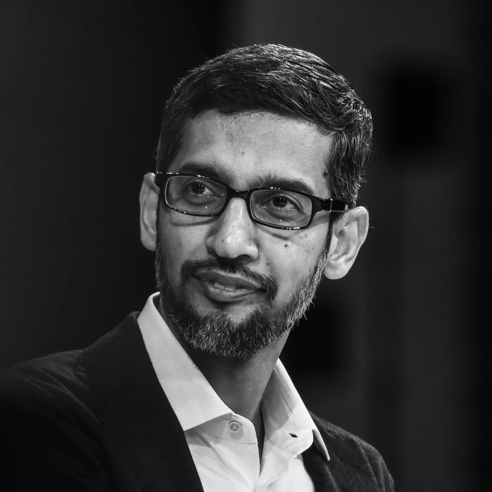
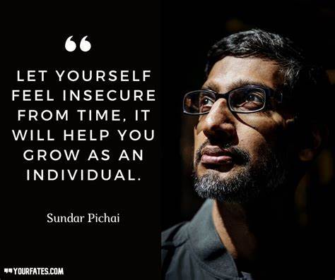
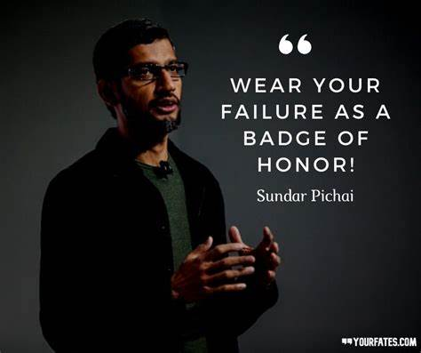
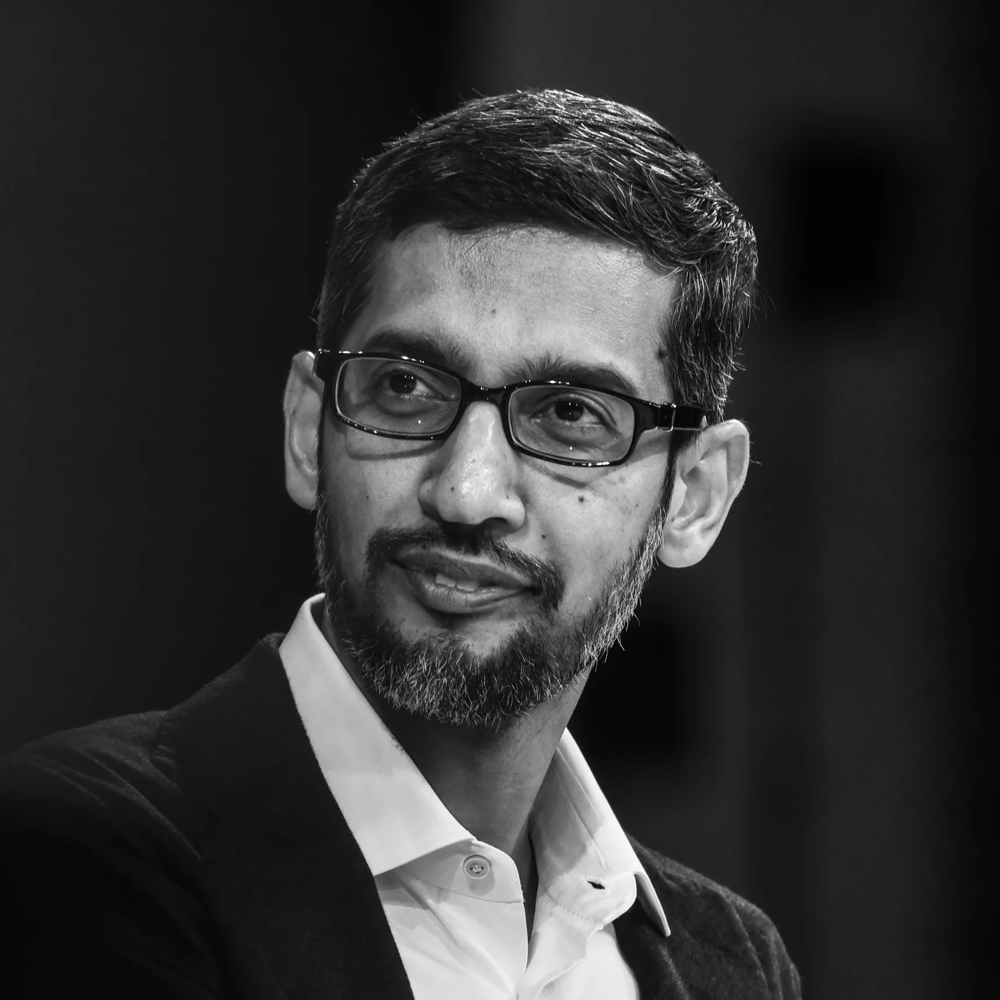
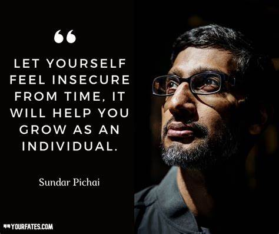
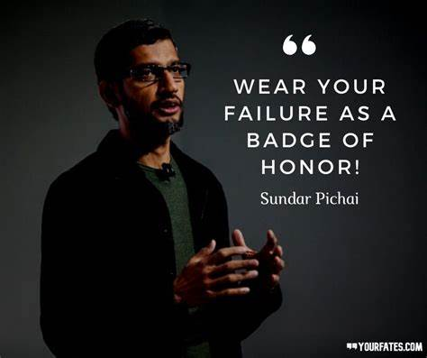

A Tribute to Sundar Pichai
About Sundar Pichai
"Sundar Pichai" (born Pichai Sundararajan on July 12, 1972) is an Indian-American business executive and the CEO of Google LLC and its parent company Alphabet Inc. He was born in Madurai, India, and grew up in a middle-class family. His father was an electrical engineer, and from a young age, Pichai showed a keen interest in technology and innovation.
Pichai earned a degree in Metallurgical Engineering from the Indian Institute of Technology (IIT) Kharagpur before pursuing further studies in the United States. He obtained an MS from Stanford University in Material Sciences and an MBA from the Wharton School of the University of Pennsylvania.
He joined Google in 2004, where he led the development of products like Google Chrome, Chrome OS, and Google Drive . His strategic leadership and focus on innovation eventually led him to become the CEO of Google in 2015, and later, the CEO of Alphabet Inc. in 2019.
Famous Quotes by Sundar Pichai
“Wear your failure as a badge of honor.”
“A person who is happy is not because everything is right in his life. He is happy because his attitude towards everything in his life is right.”
Key Achievements
- CEO of Google since 2015 and CEO of Alphabet Inc. since 2019
- Led the development of flagship products like "Google Chrome" and "Google Drive"
- Played a key role in the development of "Android", the world’s most popular mobile OS
- Advocate for "Artificial Intelligence (AI)", emphasizing its potential to solve global challenges
- Consistently listed in the "Time 100" most influential people in the world
Image Gallery
 




